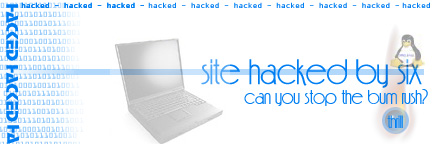

Live by the exploit....die by the exploit....eh!? Well hmm...this server was not hit to prove anything, nor to show any "skills", nor to be disrespectfull to anyone. Think about it, if it wasen't defaced by me, then it would of been done by someone else - Sabu.(by the way the cgi was deleted for secure measure eh?)
ok im done. to view original page click here
Greeting's to: Sonic(Professor Sonix), Chad, Crx, Edit, Eek, Reb, and whomever who was not an asshole to me.
Later,
Sabu.
and Six
<-------------->
Server info
OS: NT
Server: Microsoft-IIS/4.0
Exploited Entry: Cgi Attack
Exploited By: Server Exploition Scanner written by Sabu.
<-------------->
Got Attrition?
Peep this